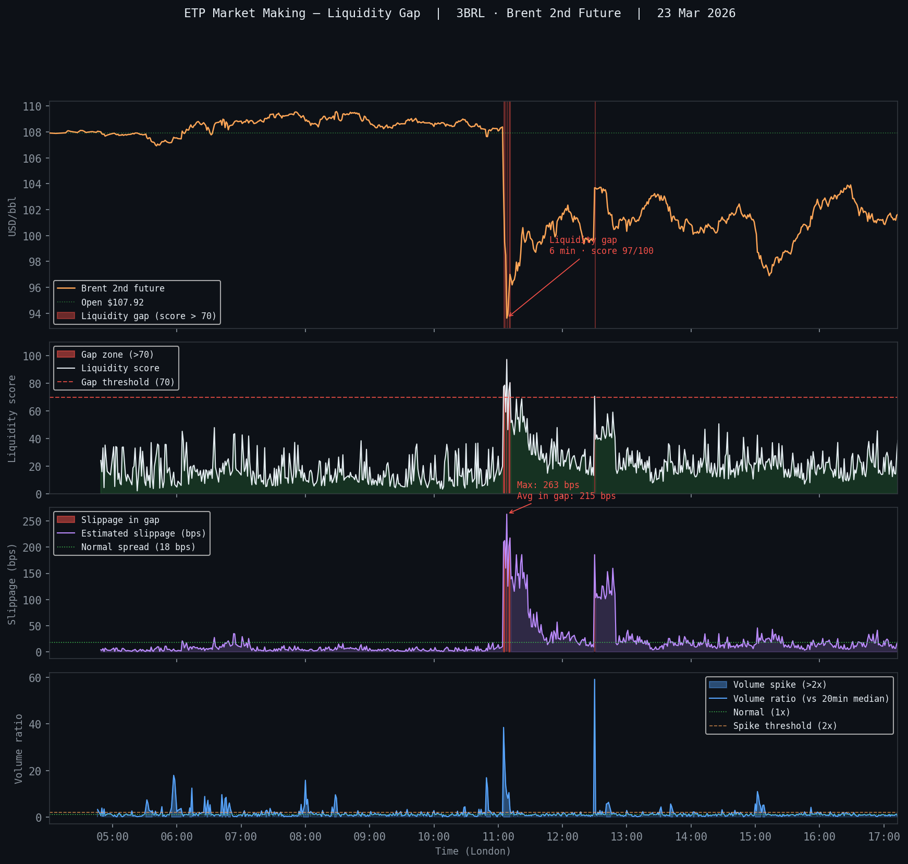

WisdomTree 3x Daily Brent Crude (3BRL) · Order book analysis · 23 March 2026
11:05 → 12:30 London · Liquidity gap event
Brent -13.3% in under 2 minutes triggered a 6-minute liquidity gap
(score 97.4/100). A retail investor trying to exit 3BRL during this window
would have paid ~215 bps in slippage — 12x the normal 18 bps execution cost.
The MM suspended quotes to absorb risk before re-engaging order books.
Max liquidity score
97.4/100
near-total book disappearance
Gap duration
6 min
11:05 → 12:30 London
Avg slippage in gap
215 bps
vs 18 bps normal (12x)
Max bar price gap
5.08%
single 1-min bar move

Session stats
Open price$107.92
Session low$93.62 (-13.3%)
Max bar price gap5.08%
Normal volume52 contracts/min
Max liquidity score97.4 / 100
Gap events (score > 70)6 minutes
Gap window11:05 → 12:30
Max Amihud illiquidity ratio284.47
Normal slippage18 bps
Max slippage263 bps
Avg slippage in gap215 bps
Slippage vs normal12x
Liquidity score methodology. The score (0-100) combines three signals:
realized vol (40pts — 300% ann. = max),
price gap (30pts — bar-to-bar jump),
and Amihud illiquidity ratio (30pts — price impact per dollar traded).
A score above 70 flags a significant liquidity gap. During the 6-minute gap window,
a market order on 3BRL would have faced ~215 bps of additional slippage —
on top of the already-wide MM spreads from Module 1 (800 bps at peak).
Combined execution cost at worst: ~1,015 bps for a retail exit during the gap.